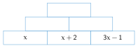

📝 Repaso de la unidad
Actividades de repaso
Escribe tu respuesta y después pulsa «Ver la solución» para corregirla tú. Los puntos dicen el nivel: ● básico, ●●● ampliación.
Escribe el término general.
- \(3, 6, 9, 12, \ldots\)
- \(6, 7, 8, 9, \ldots\)
- \(1, 5, 9, 13, \ldots\)
- \(10, 20, 30, 40, \ldots\)
Solución
a) \(3n\) b) \(n + 5\) c) \(4n - 3\) d) \(10n\)
¿Cómo te ha ido?
Escribe los tres términos siguientes de cada secuencia.
- \(2, 6, 10, 14, \ldots\)
- \(50, 45, 40, 35, \ldots\)
- \(1, 2, 4, 8, \ldots\)
- \(1, 8, 27, 64, \ldots\)
Solución
a) \(18, 22, 26\) b) \(30, 25, 20\) c) \(16, 32, 64\) d) \(125, 216, 343\)
¿Cómo te ha ido?
Escribe los cinco primeros términos de cada secuencia.
- \(4n\)
- \(n + 7\)
- \(3n - 1\)
- \(2n^2\)
Solución
a) \(4, 8, 12, 16, 20\) b) \(8, 9, 10, 11, 12\) c) \(2, 5, 8, 11, 14\) d) \(2, 8, 18, 32, 50\)
¿Cómo te ha ido?
- \(3, 5, 7, 9, \ldots\)
- \(2, 5, 8, 11, \ldots\)
- \(1, 4, 9, 16, \ldots\)
- \(5, 10, 15, 20, \ldots\)
Solución
a) \(2n + 1\) b) \(3n - 1\) c) \(n^2\) d) \(5n\)
¿Cómo te ha ido?
Completa la tabla con los términos de la secuencia de término general \(6n - 4\).
| \(n\) | 1 | 2 | 3 | 5 | 10 |
| \(6n - 4\) |
Solución
2, 8, 14, 26 y 56.
¿Cómo te ha ido?
Calcula los términos 1, 2, 3 y 10 de cada secuencia.
- \(5n - 2\)
- \(n^2 + 1\)
- \(2^n\)
Solución
- \(3, 8, 13, 48\)
- \(2, 5, 10, 101\)
- \(2, 4, 8, 1\,024\)
¿Cómo te ha ido?
Con palillos formamos cuadrados en fila: con 1 cuadrado se usan 4 palillos, con 2 cuadrados 7 y con 3 cuadrados 10.
- Escribe el término general del número de palillos para \(n\) cuadrados.
- Escribe \(n\) del 1 al 20 en la columna A de una hoja de cálculo y la fórmula en la columna B. ¿Cuántos palillos hacen falta para 20 cuadrados?
- ¿Cuántos cuadrados se forman con 100 palillos?
Solución
- \(3n + 1\)
=3*A1+1; 61 palillos.- 33 cuadrados.
¿Cómo te ha ido?
- \(5, 10, 15, 20, \ldots\)
- \(7, 9, 11, 13, \ldots\)
- \(1, 4, 9, 16, \ldots\)
- \(0, 3, 8, 15, \ldots\)
Solución
a) \(5n\) b) \(2n + 5\) c) \(n^2\) d) \(n^2 - 1\)
¿Cómo te ha ido?
Con cubos se construyen figuras: la primera tiene 1 cubo, la segunda 4, la tercera 7, la cuarta 10, y así sucesivamente.
- Escribe la expresión del número de cubos de la figura \(n\).
- ¿Cuántos cubos tiene la figura 20?
- ¿Hay alguna figura con 100 cubos? ¿Cuál?
Solución
- \(3n - 2\)
- 58 cubos.
- Sí, la 34.
¿Cómo te ha ido?
En la barra de entrada de GeoGebra escribe Secuencia(3n-2,n,1,10).
- ¿Qué lista aparece?
- Cambia la expresión por
n^2+1. Escribe los cinco primeros términos. - Escribe la expresión que genera \(10, 20, 30, \ldots\) y compruébala.
📐 Ábrelo en GeoGebra Prueba la actividad moviendo los puntos y los deslizadores.
Solución
- \(\{1, 4, 7, 10, 13, 16, 19, 22, 25, 28\}\).
- \(2, 5, 10, 17, 26\).
Secuencia(10n,n,1,10)
¿Cómo te ha ido?
Escribe el término general.
- \(20, 18, 16, 14, \ldots\)
- \(9, 8, 7, 6, \ldots\)
- \(100, 90, 80, 70, \ldots\)
- \(-1, -2, -3, -4, \ldots\)
Solución
a) \(22 - 2n\) b) \(10 - n\) c) \(110 - 10n\) d) \(-n\)
¿Cómo te ha ido?
¿Es el número 100 un término de cada secuencia? Si lo es, di qué lugar ocupa.
- \(3n + 1\)
- \(4n - 1\)
- \(n^2\)
- \(5n + 2\)
Solución
a) Sí, el 33. b) No. c) Sí, el 10. d) No.
¿Cómo te ha ido?
Iker dice que el término general de \(4, 7, 10, 13, \ldots\) es \(n + 3\), porque «se va sumando 3». Explica su error y escribe el término general correcto.
Solución
\(n + 3\) da \(4, 5, 6, \ldots\); lo correcto es \(3n + 1\).
¿Cómo te ha ido?
En un teatro la primera fila tiene 12 butacas y cada fila tiene 2 butacas más que la anterior.
- Escribe el número de butacas de la fila \(n\).
- ¿Cuántas butacas tiene la fila 15?
- ¿Qué fila tiene 50 butacas?
Solución
- \(2n + 10\)
- 40 butacas.
- La fila 20.
¿Cómo te ha ido?
Con palillos formamos una tira de triángulos: con 1 triángulo se usan 3 palillos, con 2 triángulos 5 y con 3 triángulos 7.
- Escribe el número de palillos para \(n\) triángulos.
- ¿Cuántos palillos hacen falta para 25 triángulos?
- ¿Cuántos triángulos se forman con 61 palillos?
Solución
- \(2n + 1\)
- 51 palillos.
- 30 triángulos.
¿Cómo te ha ido?
En un patio se pone una fila de baldosas blancas rodeada de baldosas grises: con 1 blanca hacen falta 8 grises, con 2 blancas 10 grises y con 3 blancas 12 grises.
- Escribe el número de baldosas grises para \(n\) blancas.
- ¿Cuántas grises hacen falta para 20 blancas?
- Si se usan 30 grises, ¿cuántas blancas hay?
Solución
- \(2n + 6\)
- 46 grises.
- 12 blancas.
¿Cómo te ha ido?
En un paseo de Santander se coloca una farola cada 20 m, con una al principio y otra al final.
- ¿Cuántas farolas hay en un tramo de 100 m? ¿Y de 200 m?
- Escribe cuántas farolas hay si el paseo tiene \(n\) tramos de 20 m.
- ¿Cuántas farolas hacen falta para un paseo de 1 km?
Solución
- 6 y 11 farolas.
- \(n + 1\)
- 51 farolas.
¿Cómo te ha ido?
Escribe en la columna A los números del 1 al 15. En B1 escribe =4*A1+3 y en C1 =6*A1-5, y arrastra.
- Escribe los cinco primeros términos de cada secuencia.
- ¿Para qué valor de \(n\) coinciden las dos? ¿Cuánto valen?
- ¿A partir de qué \(n\) es mayor la columna C?
Solución
- B: \(7, 11, 15, 19, 23\). C: \(1, 7, 13, 19, 25\).
- Para \(n = 4\); valen 19.
- A partir de \(n = 5\).
¿Cómo te ha ido?
En la barra de entrada de GeoGebra escribe Secuencia((n, 2n+1), n, 1, 8).
- ¿Qué puntos aparecen?
- ¿Están alineados?
- Cambia
2n+1porn^2. ¿Siguen alineados los puntos?
📐 Ábrelo en GeoGebra Prueba la actividad moviendo los puntos y los deslizadores.
Solución
- \((1, 3), (2, 5), (3, 7), \ldots, (8, 17)\).
- Sí.
- No.
¿Cómo te ha ido?
En el comedor juntamos mesas cuadradas en fila. En una mesa se sientan 4 personas, en dos mesas juntas 6 y en tres mesas juntas 8. ¿Cuántas personas se sientan con 10 mesas? ¿Y con \(n\) mesas? ¿Cuántas mesas hacen falta para 30 personas?
Solución
22 personas; \(2n + 2\); 14 mesas.
¿Cómo te ha ido?
Lee el texto y contesta.
Los pitagóricos, en la antigua Grecia, colocaban piedrecitas formando triángulos: 1 piedra; 3 piedras (1 + 2); 6 piedras (1 + 2 + 3); 10 piedras, y así. A estos números los llamaron triangulares. Se cuenta que, siglos después, un maestro mandó a sus alumnos sumar todos los números del 1 al 100 para tenerlos ocupados. El pequeño Gauss contestó en segundos: había descubierto que el número triangular \(n\) es \(\frac{n(n + 1)}{2}\).
- Escribe los tres números triangulares que siguen a 10.
- Comprueba la fórmula de Gauss para \(n = 4\) y para \(n = 6\).
- ¿Cuánto vale el triangular número 10?
- ¿Qué respondió Gauss a su maestro?
Solución
- 15, 21 y 28.
- 10 y 21.
- 55.
- \(5\,050\).
¿Cómo te ha ido?
Lee el texto y contesta.
Leonardo de Pisa, llamado Fibonacci, publicó en 1202 un libro con este problema: ¿cuántas parejas de conejos habrá si cada pareja tiene una nueva pareja cada mes? Al contarlas aparece la secuencia \(1, 1, 2, 3, 5, 8, \ldots\), en la que cada término es la suma de los dos anteriores. Esta secuencia aparece en las piñas, en los girasoles y en las conchas de algunos caracoles.
- Escribe los cuatro términos que siguen a 8.
- ¿Cuánto vale el término 12?
- ¿Aumenta siempre lo mismo de un término al siguiente? ¿Se puede escribir su término general como \(3n + 1\) o \(5n\)?
- ¿Cuántos de los doce primeros términos son pares?
Solución
- 13, 21, 34 y 55.
- 144.
- No; no tiene un término general de ese tipo.
- Cuatro: 2, 8, 34 y 144.
¿Cómo te ha ido?
Para la fila de \(n\) cuadrados hechos con palillos, Lucía cuenta 4 palillos por cuadrado y resta los \(n - 1\) que se repiten: \(4n - (n - 1)\). Su compañero escribe \(3n + 1\). Demuestra que las dos expresiones son iguales.
Solución
\(4n - (n - 1) = 4n - n + 1 = 3n + 1\)
¿Cómo te ha ido?
La figura \(n\) de una secuencia es un cuadrado de \(n\) filas y \(n\) columnas de puntos.
- ¿Cuántos puntos tiene la figura 10?
- Escribe cuántos puntos hay en el borde de la figura \(n\) (para \(n \geq 2\)). ¿Cuántos hay en el borde de la figura 10?
- ¿Cuántos puntos quedan dentro en la figura 10? Comprueba que, sumados con los del borde, dan el total.
Solución
- 100 puntos.
- \(4n - 4\); 36 puntos.
- 64 puntos; \(36 + 64 = 100\).
¿Cómo te ha ido?
- El doble de un número más 3.
- El cuadrado de un número menos 1.
- La mitad de un número más su triple.
- Tres números consecutivos.
Solución
a) \(2x + 3\) b) \(x^2 - 1\) c) \(\dfrac{x}{2} + 3x\) d) \(x\), \(x+1\), \(x+2\)
¿Cómo te ha ido?
Calcula el valor numérico para \(x = 3\).
- \(4x - 5\)
- \(x^2 + x\)
- \(10 - 2x\)
- \(\dfrac{x + 9}{4}\)
Solución
a) \(7\) b) \(12\) c) \(4\) d) \(3\)
¿Cómo te ha ido?
- El triple de un número menos 2.
- La mitad de un número menos 3.
- El cubo de un número.
- Dos números pares consecutivos.
Solución
a) \(3x - 2\) b) \(\frac{x}{2} - 3\) c) \(x^3\) d) \(2x\) y \(2x + 2\)
¿Cómo te ha ido?
Escribe con palabras lo que expresa cada expresión.
- \(3x\)
- \(x + 7\)
- \(\dfrac{x}{4}\)
- \((x + 1)^2\)
Solución
a) El triple de un número. b) Un número más siete. c) La cuarta parte de un número. d) El cuadrado del número siguiente.
¿Cómo te ha ido?
Completa la tabla de valores de la expresión \(4x - 1\).
| \(x\) | 1 | 2 | 3 | 4 | 10 |
| \(4x - 1\) |
Solución
3, 7, 11, 15 y 39.
¿Cómo te ha ido?
- \(3x - 2\) para \(x = 4\)
- \(x^2 + 1\) para \(x = -3\)
- \(2(a + b)\) para \(a = 3\), \(b = -1\)
- \(5 - \dfrac{x}{2}\) para \(x = 6\)
Solución
a) \(10\) b) \(10\) c) \(4\) d) \(2\)
¿Cómo te ha ido?
Escribe con una expresión algebraica:
- El perímetro de un triángulo equilátero de lado \(l\).
- El área de un cuadrado de lado \(l\).
- El perímetro de un rectángulo de base \(b\) y altura \(a\).
- El área de ese rectángulo.
Solución
a) \(3l\) b) \(l^2\) c) \(2b + 2a\) d) \(ab\)
¿Cómo te ha ido?
- El doble de un número, menos 1.
- El doble del número anterior a \(x\).
- El cuadrado de un número, más 1.
- El cuadrado del número siguiente a \(x\).
Solución
a) \(2x - 1\) b) \(2(x - 1)\) c) \(x^2 + 1\) d) \((x + 1)^2\)
¿Cómo te ha ido?
Calcula el valor numérico para \(x = -2\).
- \(3x + 7\)
- \(x^2 - x\)
- \(-x + 5\)
- \(x^3\)
Solución
a) \(1\) b) \(6\) c) \(7\) d) \(-8\)
¿Cómo te ha ido?
Escribe con palabras lo que expresa cada expresión.
- \(2x - 5\)
- \(\dfrac{x}{3} + 1\)
- \(x^2 + x\)
- \(2(x + 3)\)
Solución
a) El doble de un número menos cinco. b) La tercera parte de un número más uno. c) El cuadrado de un número más el mismo número. d) El doble de la suma de un número y tres.
¿Cómo te ha ido?
Completa la tabla de valores de la expresión \(x^2 - 2x\).
| \(x\) | \(-1\) | 0 | 1 | 2 | 3 |
| \(x^2 - 2x\) |
Solución
3, 0, \(-1\), 0 y 3.
¿Cómo te ha ido?
- Juan tiene \(x\) años. Su padre tiene 28 años más que él. ¿Cuántos años tiene su padre?
- Un rectángulo mide \(x\) cm de ancho y el doble de largo. ¿Cuál es su perímetro?
- Compro \(a\) bolígrafos a 0,80 € y \(b\) cuadernos a 2 €. ¿Cuánto pago?
Solución
- \(x + 28\)
- \(6x\)
- \(0{,}80a + 2b\)
¿Cómo te ha ido?
Calcula el valor numérico para \(a = -2\) y \(b = 5\).
- \(3a + b\)
- \(a^2 - b\)
- \(ab + 4\)
- \(2(a + b)\)
Solución
a) \(-1\) b) \(-1\) c) \(-6\) d) \(6\)
¿Cómo te ha ido?
Llamamos \(x\) a la edad de Laura. Escribe una expresión algebraica para:
- La edad de su hermano, que tiene 4 años menos que ella.
- La edad de su padre, que tiene el triple que Laura.
- La edad de Laura dentro de 6 años.
- La suma de las edades de Laura y su hermano.
Solución
a) \(x - 4\) b) \(3x\) c) \(x + 6\) d) \(2x - 4\)
¿Cómo te ha ido?
Una tarifa de móvil cuesta 8 € al mes más \(0{,}05\) € por cada minuto de llamada. Escribe la expresión del coste mensual si se hablan \(m\) minutos y calcula cuánto se paga con 120 minutos.
Solución
\(8 + 0{,}05m\); con 120 minutos, 14 €.
¿Cómo te ha ido?
Una entrada de adulto cuesta \(x\) euros y una infantil, \(y\) euros.
- Escribe lo que paga una familia con 2 adultos y 3 niños.
- Calcula el total si la entrada de adulto cuesta 25 € y la infantil, 12 €.
Solución
- \(2x + 3y\)
- 86 €
¿Cómo te ha ido?
Marta tiene 50 € en su hucha y cada semana mete 8 € más.
- Escribe la expresión del dinero que tiene después de \(s\) semanas.
- ¿Cuánto tendrá a las 10 semanas?
- Probando valores, ¿cuántas semanas necesita para tener al menos 200 €?
Solución
- \(50 + 8s\)
- 130 €
- 19 semanas.
¿Cómo te ha ido?
Escribe en la columna A los números del \(-3\) al \(3\). En B1 escribe =2*A1+1 y en C1 =A1^2, y arrastra.
- Copia la tabla. ¿Para algún valor entero de \(x\) coinciden \(2x + 1\) y \(x^2\)?
- ¿Entre qué valores de la columna A cambia cuál de las dos expresiones es mayor?
Solución
- B: \(-5, -3, -1, 1, 3, 5, 7\). C: \(9, 4, 1, 0, 1, 4, 9\). No.
- Entre \(-1\) y \(0\), y entre \(2\) y \(3\).
¿Cómo te ha ido?
Lee el texto y contesta.
El ayuntamiento ofrece un servicio de bicicletas. Los vecinos pagan un abono de 30 € al año; con él, la primera media hora de cada viaje es gratis y cada media hora más cuesta \(0{,}50\) €. Los turistas no tienen abono y pagan 4 € por cada hora de uso.
- Escribe lo que paga un turista por usar la bici \(h\) horas.
- ¿Cuánto paga un vecino por un viaje de hora y media?
- Escribe lo que paga un vecino por un viaje con \(m\) medias horas además de la gratuita.
- Un vecino hace 100 viajes al año y en cada uno usa una media hora extra. ¿Cuánto gasta en total en un año, contando el abono?
Solución
- \(4h\) euros.
- 1 €.
- \(0{,}5m\) euros.
- 80 €.
¿Cómo te ha ido?
Calcula el valor numérico para \(x = \frac{1}{2}\).
- \(4x\)
- \(2x + \frac{1}{2}\)
- \(x^2\)
- \(6x - 1\)
Solución
a) \(2\) b) \(\frac{3}{2}\) c) \(\frac{1}{4}\) d) \(2\)
¿Cómo te ha ido?
Llamamos \(x\) a un número natural.
- Escribe el número anterior y el siguiente.
- Escribe y reduce la suma de los tres números: el anterior, \(x\) y el siguiente.
- Escribe tres números impares consecutivos usando \(x\).
Solución
- \(x - 1\) y \(x + 1\)
- \(3x\)
- \(2x + 1\), \(2x + 3\) y \(2x + 5\)
¿Cómo te ha ido?
En un monedero hay \(x\) monedas de 2 € e \(y\) monedas de 50 céntimos.
- Escribe cuánto dinero hay en euros.
- Calcula cuánto dinero hay si \(x = 7\) e \(y = 9\).
Solución
- \(2x + 0{,}5y\)
- \(18{,}50\) €
¿Cómo te ha ido?
Para ir al parque de Cabárceno, el autobús cuesta 450 € y la entrada, 14 € por alumno.
- Escribe lo que cuesta en total la excursión para \(a\) alumnos.
- Escribe lo que paga cada alumno si se reparte el total.
- Calcula el total y lo que paga cada uno si van 50 alumnos.
Solución
- \(450 + 14a\)
- \(\dfrac{450 + 14a}{a}\)
- 1 150 € en total; 23 € cada uno.
¿Cómo te ha ido?
Un día de invierno hay 15 °C en la playa de Santander y la temperatura baja 6 °C por cada kilómetro que subimos.
- Escribe la temperatura a \(h\) kilómetros de altura.
- ¿Qué temperatura hay a 2 km de altura?
- ¿Y a 3 km?
Solución
- \(15 - 6h\)
- 3 °C
- \(-3\) °C
¿Cómo te ha ido?
Escribe en la columna A los números del 0 al 5. En B1 escribe =A1^2+A1 y en C1 =A1*(A1+1), y arrastra.
- ¿Qué valores aparecen en las columnas B y C?
- ¿Qué observas? ¿Qué crees que pasará con otros números?
Solución
- B y C: \(0, 2, 6, 12, 20, 30\).
- Coinciden siempre: \(x^2 + x\) y \(x(x + 1)\) son la misma expresión.
¿Cómo te ha ido?
En GeoGebra crea un deslizador \(a\) que vaya de \(-5\) a \(5\) con incremento 1 y escribe en la barra de entrada 3a-4.
- ¿Cuánto vale la expresión para \(a = 2\)?
- ¿Y para \(a = -1\)?
- Mueve el deslizador. ¿Para qué valor de \(a\) vale 11?
📐 Ábrelo en GeoGebra Prueba la actividad moviendo los puntos y los deslizadores.
Solución
- \(2\)
- \(-7\)
- Para \(a = 5\).
¿Cómo te ha ido?
Lee el texto y contesta.
En Europa, la talla del calzado se calcula a partir de la longitud del pie. Una fórmula aproximada es \(T = 1{,}5L + 2\), donde \(L\) es la longitud del pie en centímetros. Por eso conviene medirse el pie por la tarde, cuando está algo más hinchado, y con el calcetín puesto.
- ¿Qué talla usa una persona cuyo pie mide 24 cm?
- ¿Y si el pie mide 26 cm?
- Probando valores, ¿cuánto mide el pie de alguien que usa la talla 44?
- Si el pie crece 2 cm, ¿cuántas tallas aumenta?
Solución
- Talla 38.
- Talla 41.
- 28 cm.
- 3 tallas.
¿Cómo te ha ido?
- Calcula el valor numérico de \(n(n + 1)\) para \(n = 1, 2, 3, 4\) y \(5\). ¿Qué tienen en común los resultados?
- Explica por qué ocurre siempre.
Solución
- \(2, 6, 12, 20, 30\): todos son pares.
- \(n\) y \(n + 1\) son consecutivos, así que uno de los dos es par y el producto también.
¿Cómo te ha ido?
Agrupa los monomios semejantes: \(3x\), \(-2x^2\), \(5y\), \(x\), \(7x^2\), \(-y\).
Solución
\(3x\) y \(x\); \(-2x^2\) y \(7x^2\); \(5y\) y \(-y\).
¿Cómo te ha ido?
Indica el coeficiente, la parte literal y el grado de cada monomio.
- \(-5x^3\)
- \(\frac{2}{3}ab^2\)
- \(7x\)
- \(-y^4\)
Solución
- \(-5\); \(x^3\); grado 3
- \(\frac{2}{3}\); \(ab^2\); grado 3
- \(7\); \(x\); grado 1
- \(-1\); \(y^4\); grado 4
¿Cómo te ha ido?
Indica el coeficiente, la parte literal y el grado.
- \(-7x^2\)
- \(4ab\)
- \(\dfrac{1}{2}x^3y\)
- \(-m\)
Solución
a) \(-7\); \(x^2\); grado 2 b) \(4\); \(ab\); grado 2 c) \(\frac{1}{2}\); \(x^3y\); grado 4 d) \(-1\); \(m\); grado 1
¿Cómo te ha ido?
Indica cuáles de estas expresiones son monomios.
Solución
Son monomios \(5x^2\), \(-4ab\), \(x^3y\), \(-y\) y \(\frac{x}{3}\). No lo son \(x + 3\) (es una suma) ni \(\frac{2}{x}\) (la letra divide).
¿Cómo te ha ido?
Indica el grado de cada monomio.
- \(4x\)
- \(-2x^3\)
- \(5x^2y^2\)
- \(ab\)
- \(-7y^2\)
- \(3xyz\)
Solución
a) 1 b) 3 c) 4 d) 2 e) 2 f) 3
¿Cómo te ha ido?
Indica el coeficiente de cada monomio.
- \(x^2\)
- \(-ab\)
- \(\dfrac{y}{2}\)
- \(-\dfrac{x^3}{4}\)
Solución
a) \(1\) b) \(-1\) c) \(\frac{1}{2}\) d) \(-\frac{1}{4}\)
¿Cómo te ha ido?
Escribe un monomio:
- De coeficiente \(-3\) y parte literal \(x^2y\).
- Con la letra \(a\), de coeficiente 2 y grado 4.
- Semejante a \(5xy\) y de coeficiente \(-1\).
- De grado 3 con las letras \(x\) e \(y\).
Solución
a) \(-3x^2y\) b) \(2a^4\) c) \(-xy\) d) Por ejemplo, \(x^2y\) o \(4xy^2\).
¿Cómo te ha ido?
Escribe dos monomios semejantes a cada uno.
- \(3x\)
- \(-2a^2\)
- \(xy\)
- \(5x^2y\)
Solución
Respuesta abierta. Por ejemplo: a) \(x\) y \(-4x\) b) \(a^2\) y \(7a^2\) c) \(4xy\) y \(-xy\) d) \(-x^2y\) y \(2x^2y\)
¿Cómo te ha ido?
Calcula el valor numérico para \(x = 2\) e \(y = -1\).
- \(3x^2\)
- \(-xy\)
- \(5y^3\)
- \(x^2y\)
Solución
a) \(12\) b) \(2\) c) \(-5\) d) \(-4\)
¿Cómo te ha ido?
Agrupa los monomios semejantes. ¿Hay alguno que no tenga pareja?
Solución
\(4ab\), \(3ba\) y \(-5ab\); \(-a^2b\) y \(\frac{1}{2}a^2b\). \(2ab^2\) no tiene semejantes.
¿Cómo te ha ido?
| Monomio | Coeficiente | Parte literal | Grado |
| \(-4x^2y\) | |||
| 6 | \(ab^3\) | ||
| \(-1\) | solo la letra \(m\) | 2 | |
| \(\frac{1}{3}\) | \(xyz\) |
Solución
1.ª fila: \(-4\); \(x^2y\); grado 3. 2.ª fila: \(6ab^3\); grado 4. 3.ª fila: \(-m^2\); \(m^2\). 4.ª fila: \(\frac{1}{3}xyz\); grado 3.
¿Cómo te ha ido?
Escribe un monomio para cada enunciado e indica su grado.
- El triple del cuadrado de un número.
- La mitad del cubo de un número.
- El doble del producto de dos números.
- El opuesto de un número.
Solución
a) \(3x^2\); grado 2 b) \(\frac{1}{2}x^3\); grado 3 c) \(2xy\); grado 2 d) \(-x\); grado 1
¿Cómo te ha ido?
Expresa con un monomio e indica su grado.
- El perímetro de un cuadrado de lado \(3x\).
- El área de ese cuadrado.
- El volumen de un cubo de arista \(a\).
- El área de un rectángulo de lados \(2x\) y \(5y\).
Solución
a) \(12x\); grado 1 b) \(9x^2\); grado 2 c) \(a^3\); grado 3 d) \(10xy\); grado 2
¿Cómo te ha ido?
- El grado de \(7x^2y^3\) es 5.
- \(3x\) y \(3x^2\) son semejantes porque tienen el mismo coeficiente.
- El coeficiente de \(-x\) es \(-1\).
- \(x + y\) es un monomio de grado 1.
Solución
a) Verdadero. b) Falso: no tienen la misma parte literal. c) Verdadero. d) Falso: es una suma de dos monomios.
¿Cómo te ha ido?
Nerea dice que el coeficiente de \(\dfrac{x^2}{5}\) es 5 y que el grado de \(4xy^2\) es 2. Corrige sus errores.
Solución
El coeficiente es \(\frac{1}{5}\) y el grado es 3 (\(1 + 2\)).
¿Cómo te ha ido?
Una caja tiene forma de ortoedro: caben \(x\) cubos a lo largo, \(x\) a lo ancho y \(2x\) a lo alto.
- Escribe el monomio que da el número de cubos que caben e indica su grado.
- ¿Cuántos cubos caben si \(x = 3\)?
Solución
- \(2x^3\); grado 3.
- 54 cubos.
¿Cómo te ha ido?
Escribe en la columna A los números del 1 al 6 y en B1 =3*A1^2, y arrastra.
- ¿Qué valores aparecen en la columna B?
- Compara el valor para \(x = 1\) con el de \(x = 2\), y el de \(x = 3\) con el de \(x = 6\). ¿Cuántas veces aumenta el valor cuando \(x\) se hace el doble?
Solución
- \(3, 12, 27, 48, 75, 108\).
- Se multiplica por 4.
¿Cómo te ha ido?
Lee el texto y contesta.
Los monomios de grado 1, como \(3x\), se llaman lineales, porque sirven para medir longitudes. Los de grado 2, como \(x^2\), se llaman cuadráticos, porque el área de un cuadrado de lado \(x\) es \(x^2\). Los de grado 3 se llaman cúbicos, porque el volumen de un cubo de arista \(x\) es \(x^3\).
- Clasifica: \(5x\), \(-x^2\), \(2ab\), \(a^3\), \(xy^2\).
- Pon un ejemplo de una medida que se exprese con un monomio cuadrático.
Solución
- Lineal; cuadrático; cuadrático; cúbico; cúbico.
- Por ejemplo, el área de un rectángulo de lados \(x\) e \(y\): \(xy\).
¿Cómo te ha ido?
Un monomio solo tiene la letra \(x\), es de grado 2 y vale 12 cuando \(x = 2\).
- ¿Qué monomio es?
- ¿Cuánto vale para \(x = -2\)?
Solución
- \(3x^2\)
- 12
¿Cómo te ha ido?
- ¿Qué número debe ser \(a\) para que \(5x^ay^2\) y \(-2x^3y^2\) sean semejantes?
- Con ese valor, suma los dos monomios. ¿Qué grado tiene el resultado?
Solución
- \(a = 3\)
- \(3x^3y^2\); grado 5.
¿Cómo te ha ido?
- \(5x + 3x - 2x\)
- \(4a - 9a\)
- \(x^2 + 3x^2 - x^2\)
- \(2x + 3y - 5x + y\)
Solución
a) \(6x\) b) \(-5a\) c) \(3x^2\) d) \(-3x + 4y\)
¿Cómo te ha ido?
- \(4x \cdot 3\)
- \(5a \cdot 2a\)
- \(-3x \cdot 2x^2\)
- \((-x) \cdot (-4y)\)
Solución
a) \(12x\) b) \(10a^2\) c) \(-6x^3\) d) \(4xy\)
¿Cómo te ha ido?
- \(3x + 5 - x + 2\)
- \(4a - 2b + a + 5b\)
- \(x^2 + 3x - 2x^2 + x\)
- \(6 - 2y + y - 8\)
Solución
a) \(2x + 7\) b) \(5a + 3b\) c) \(-x^2 + 4x\) d) \(-y - 2\)
¿Cómo te ha ido?
- \(7x - 4x + x\)
- \(4a^2 - 7a^2\)
- \(2xy + xy - 5xy\)
- \(6x + 3 - 2x + 4\)
Solución
a) \(4x\) b) \(-3a^2\) c) \(-2xy\) d) \(4x + 7\)
¿Cómo te ha ido?
- \(3x \cdot 4x\)
- \((-2a) \cdot 5a^2\)
- \(12x^3 : 4x\)
- \(15ab : (-5b)\)
Solución
a) \(12x^2\) b) \(-10a^3\) c) \(3x^2\) d) \(-3a\)
¿Cómo te ha ido?
- \(3ab + 2ab - ab\)
- \(x^2 + 2x + 3x^2 - x\)
- \(5y - 2 + y + 9\)
- \(2x + 3y - 2x\)
Solución
a) \(4ab\) b) \(4x^2 + x\) c) \(6y + 7\) d) \(3y\)
¿Cómo te ha ido?
- \(5(x + 2)\)
- \(3(2a - 4)\)
- \(-(x + 6)\)
- \(-4(1 - 2x)\)
Solución
a) \(5x + 10\) b) \(6a - 12\) c) \(-x - 6\) d) \(-4 + 8x\)
¿Cómo te ha ido?
- \(2a \cdot 3b\)
- \(x^2 \cdot x^3\)
- \((-5x) \cdot (-2x)\)
- \(4xy \cdot 2x\)
Solución
a) \(6ab\) b) \(x^5\) c) \(10x^2\) d) \(8x^2y\)
¿Cómo te ha ido?
- \(3(x + 2) + 4x\)
- \(2(3x - 1) - 5x\)
- \(4(x + 1) - 3(x - 2)\)
- \(-(2x - 5) + 2(x + 3)\)
Solución
a) \(7x + 6\) b) \(x - 2\) c) \(x + 10\) d) \(11\)
¿Cómo te ha ido?
Justifica tu respuesta dando un valor a \(x\).
- \(3x + 2x = 5x^2\)
- \(3x \cdot 2x = 6x^2\)
- \(x + x + x = x^3\)
- \(2(x + 3) = 2x + 3\)
Solución
- Falso
- Verdadero
- Falso
- Falso
¿Cómo te ha ido?
Rubén ha simplificado \(5x - (2x - 3) = 3x - 3\). Explica el error y escribe el resultado correcto.
Solución
\(5x - (2x - 3) = 3x + 3\)
¿Cómo te ha ido?
- \(2(x + 3) - (x - 4)\)
- \(3x - 2(x - 5) + 1\)
- \(4(2a - 1) - 3(a + 2)\)
- \(x(x + 2) - x^2\)
Solución
a) \(x + 10\) b) \(x + 11\) c) \(5a - 10\) d) \(2x\)
¿Cómo te ha ido?
Un rectángulo tiene una base de \(x\) cm y su altura mide 3 cm más que la base.
- Escribe y simplifica las expresiones de su perímetro y de su área.
- Calcula el perímetro y el área si \(x = 5\).
Solución
- Perímetro: \(4x + 6\). Área: \(x^2 + 3x\).
- Perímetro: 26 cm. Área: 40 cm\(^2\).
¿Cómo te ha ido?
Cada igualdad tiene un error. Corrígela.
- \(4x - x = 4\)
- \(x \cdot x = 2x\)
- \(-(x - 4) = -x - 4\)
- \(x^2 + x^2 = x^4\)
Solución
a) \(3x\) b) \(x^2\) c) \(-x + 4\) d) \(2x^2\)
¿Cómo te ha ido?
Calcula la suma y el producto de cada pareja de monomios.
- \(3x\) y \(5x\)
- \(-2a\) y \(6a\)
- \(x\) y \(x\)
- \(4x\) y \(2y\)
Solución
a) \(8x\); \(15x^2\) b) \(4a\); \(-12a^2\) c) \(2x\); \(x^2\) d) \(4x + 2y\); \(8xy\)
¿Cómo te ha ido?
- \(5(x - 1) + 2(x + 3)\)
- \(6x - 3(x + 2)\)
- \(2(a + b) - (a - b)\)
- \(-2(x - 4) - 3(2 - x)\)
Solución
a) \(7x + 1\) b) \(3x - 6\) c) \(a + 3b\) d) \(x + 2\)
¿Cómo te ha ido?
- \(x(x + 3)\)
- \(2x(x - 5)\)
- \(-a(4 - a)\)
- \(3x(2x + 1)\)
Solución
a) \(x^2 + 3x\) b) \(2x^2 - 10x\) c) \(-4a + a^2\) d) \(6x^2 + 3x\)
¿Cómo te ha ido?
Escribe lo que falta en cada hueco.
- \(3x + \square = 7x\)
- \(\square - 2a = 5a\)
- \(4x \cdot \square = 12x^3\)
- \(\square\,(x + 2) = 5x + 10\)
Solución
a) \(4x\) b) \(7a\) c) \(3x^2\) d) \(5\)
¿Cómo te ha ido?
Los lados de un triángulo miden \(2x\), \(x + 3\) y \(3x - 1\) centímetros. Escribe su perímetro de la forma más sencilla y calcúlalo para \(x = 4\).
Solución
\(6x + 2\); 26 cm.
¿Cómo te ha ido?
Una camiseta cuesta \(x\) euros, un pantalón el triple que la camiseta y unas zapatillas 15 € más que el pantalón.
- Escribe y reduce lo que cuestan las tres prendas juntas.
- ¿Cuánto cuestan si la camiseta vale 12 €?
Solución
- \(x + 3x + (3x + 15) = 7x + 15\)
- 99 €
¿Cómo te ha ido?
Escribe en la columna A los números del 1 al 5. En B1 escribe =3*(A1+2)-A1 y en C1 =2*A1+6, y arrastra.
- ¿Qué valores salen en B y en C?
- Explica con el álgebra por qué ocurre.
Solución
- Los mismos: \(8, 10, 12, 14, 16\).
- \(3(x + 2) - x = 3x + 6 - x = 2x + 6\)
¿Cómo te ha ido?
Un jardín rectangular mide \(x\) metros de ancho y el doble de largo. Se rodea con una valla, pero se dejan sin vallar 2 metros para la puerta. Escribe los metros de valla de la forma más sencilla. ¿Cuántos son si \(x = 5\)?
Solución
\(6x - 2\); 28 m.
¿Cómo te ha ido?
Piensa un número, súmale 5, multiplica el resultado por 2, réstale 10 y divide entre 2. Siempre obtienes el número que has pensado. Explica por qué usando el lenguaje algebraico.
Solución
\(\dfrac{2(x + 5) - 10}{2} = x\)
¿Cómo te ha ido?
¿Cuáles de estas expresiones valen lo mismo para cualquier valor de \(x\)? Para la que no, da un valor de \(x\) que lo demuestre.
Solución
Son equivalentes todas menos \(2x + 3\) (para \(x = 0\) vale 3 y las demás, 6).
¿Cómo te ha ido?
- Suma tres números naturales consecutivos en varios casos. ¿Qué observas?
- Demuéstralo usando el álgebra.
Solución
- La suma es siempre múltiplo de 3.
- \(x + (x + 1) + (x + 2) = 3(x + 1)\)
¿Cómo te ha ido?
Lee el texto y contesta.
Pide a un amigo que elija en un calendario tres días seguidos de una misma columna, por ejemplo 3, 10 y 17, y que te diga solo cuánto suman. Tú restas 21, divides entre 3 y le dices el primer día. Los otros dos son ese día más 7 y más 14.
- Si el primer día es \(x\), escribe los otros dos.
- Escribe y reduce la suma de los tres días.
- Si la suma es 48, ¿qué días eligió?
- ¿Puede la suma ser 100? ¿Por qué?
Solución
- \(x + 7\) y \(x + 14\)
- \(3x + 21\)
- 9, 16 y 23.
- No: \(100 - 21 = 79\) no es múltiplo de 3.
¿Cómo te ha ido?
En esta pirámide cada ladrillo es la suma de los dos que tiene debajo.

- Completa la pirámide reduciendo cada expresión.
- ¿Cuánto vale el ladrillo de arriba si \(x = 5\)?
Solución
- Fila central: \(2x + 2\) y \(4x + 1\). Arriba: \(6x + 3\).
- 33
¿Cómo te ha ido?
Un rectángulo mide \(3x\) cm de base y \(x + 2\) cm de altura.
- Escribe y reduce su área y su perímetro.
- Calcula el área y el perímetro si \(x = 2\).
Solución
- Área: \(3x^2 + 6x\). Perímetro: \(8x + 4\).
- Área: 24 cm\(^2\). Perímetro: 20 cm.
¿Cómo te ha ido?
🧩 Paso a paso
Así se resuelven los ejercicios tipo de la unidad. Cada bloque es una orden, como en Scratch: los bloques se leen de arriba abajo y los que tienen forma de C se repiten o solo se hacen si se cumple la condición.